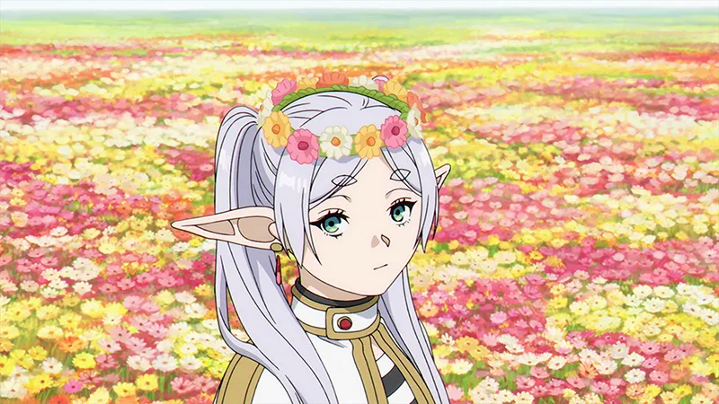
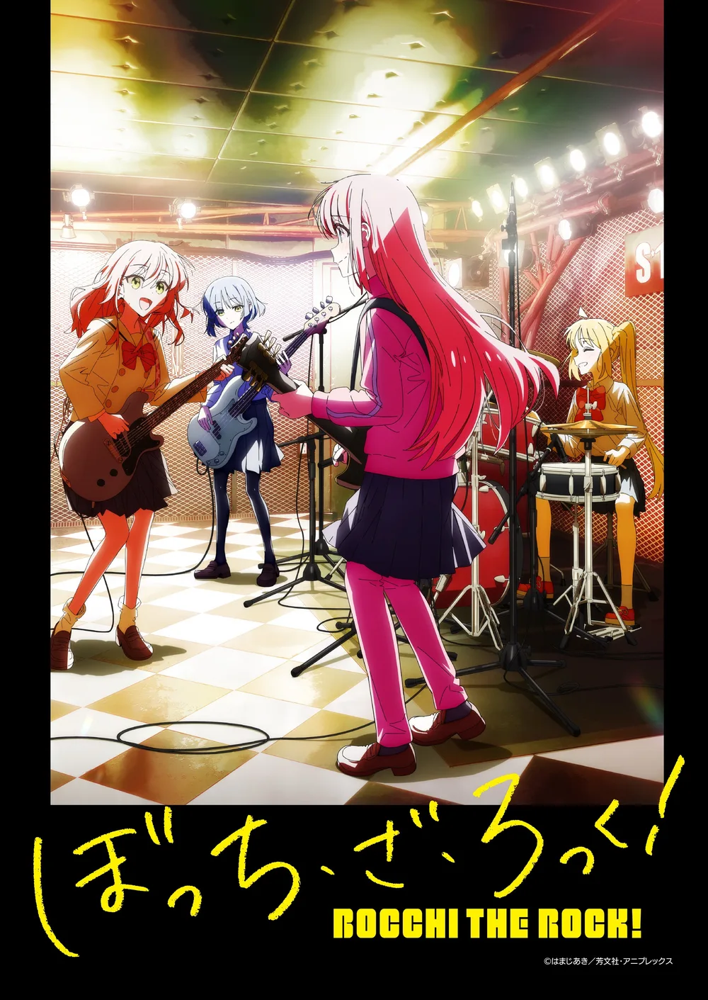

跳至学习内容
我的学习
/
五十音图
界面语言
中文
English
한국어
0
天坚持
学
今日の景色
芙莉莲 · 花田
孤独摇滚 · 放课后
专注模式
装扮
清空所有学习记录？
当前浏览器的练习次数、记忆状态和错题都会清空。建议先导出一份备份。
保留记录
确认清空
MAKE YOURSELF AT HOME
装扮你的花园
给今天的日语时间，换一份喜欢的心情。
×

花田里的旅途
葬送的芙莉莲 · 青绿 × 奶油白

放课后的约定
孤独摇滚！ · 樱粉 × 浅紫
动漫背景
角色立绘与挂件
图片来源与作品信息
就用这个，开始学习